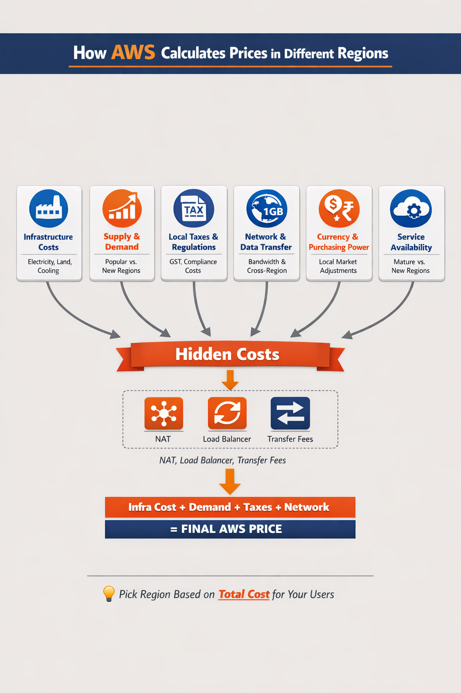

A question that comes up constantly: why does the same EC2 instance cost more in Mumbai than in US East? It's not random. AWS pricing per region is the result of at least six compounding factors. Understanding them helps you make smarter architecture decisions — not just picking the cheapest region, but picking the right total-cost region for your users.

Figure 8: How AWS Calculates Prices in Different Regions
1. Infrastructure Cost in That Region
AWS builds and operates data centers in each region. The cost of running those data centers varies dramatically by location — and those costs get passed into pricing.
Factors that drive infrastructure cost:
- Electricity cost — power is much cheaper in some US states than in South Asia or Europe
- Land and construction — real estate near major cities (Mumbai, Frankfurt) costs more than rural Oregon or Virginia
- Cooling requirements — hot climates need more cooling infrastructure
- Local hardware logistics — importing and maintaining server hardware in some regions is more expensive
⚡ Example: US East (N. Virginia) has some of the cheapest infrastructure costs globally — older, fully amortized data centers, cheap electricity, and economies of scale from being AWS's largest region. Mumbai has higher real estate and energy costs, which is directly reflected in its pricing.
2. Supply and Demand
Pricing is also influenced by how heavily a region is used. Popular, mature regions with high utilization can sometimes have higher baseline pricing, while newer regions with lower demand may offer competitive introductory pricing to attract customers. This dynamic is especially visible with Spot Instance prices, which fluctuate in real time based on available spare capacity in each region and Availability Zone.
3. Local Taxes and Regulations
Every AWS region operates under the laws of its country. Compliance costs get baked into the pricing:
- India: GST (Goods and Services Tax) applies. Compliance with local data residency laws adds overhead.
- Europe: GDPR compliance requirements add engineering and operational cost to running EU regions
- Brazil: High import duties and tax complexity make São Paulo one of the most expensive AWS regions
💡 AWS doesn't absorb these costs — they're reflected in the regional price. This is why two technically identical regions in different countries will have different price tags.
4. Network and Data Transfer Cost
This is a big one that beginners often overlook. Data transfer pricing isn't flat — it depends on where data travels:
- Distance between regions: longer physical distance = more network infrastructure = higher cost
- Internet exchange costs: connecting to local internet exchanges varies significantly by country
- Bandwidth pricing locally: internet bandwidth costs differ by country
⚡ Practical example: Data transfer from Mumbai to US East is more expensive than data transfer within the US. Even if your EC2 instance in Mumbai is slightly cheaper, heavy cross-region data transfer can more than offset that savings.
This is also why data transfer OUT from AWS to the internet is always charged, while data transfer IN is generally free — outbound means your app is serving customers, which is the value-generating event.
5. Currency and Purchasing Power
AWS doesn't simply convert USD prices to local currency at market rates. They actively adjust pricing based on:
- Local market expectations and willingness to pay
- Purchasing power parity in that country
- Competitive landscape — what do local and regional cloud providers charge?
The result: two regions with near-identical infrastructure costs can still have different prices because AWS has calibrated pricing to what the local market can support and what makes business sense competitively.
6. Service Availability Maturity
Not all AWS regions offer all services, and not all regions are equally optimized:
- Older regions (US East, EU West): fully optimized infrastructure, amortized setup costs, economies of scale from years of investment — generally cheaper per unit
- Newer regions (Middle East, Africa, newer Asia-Pacific): higher setup costs, fewer optimizations, smaller customer base — generally more expensive per unit until they mature
7. Hidden Cost Differences (The Trap Most Beginners Fall Into)
Even if compute prices look similar between two regions, the total cost of running the same architecture can differ significantly due to:
- NAT Gateway pricing — varies by region
- Data transfer rules — cross-AZ and cross-region transfer rates differ
- Load balancer costs — Application Load Balancer hourly rates vary
- Storage tier pricing — EBS and S3 prices are not identical across regions
❌ The Trap: Comparing only EC2 instance prices across regions and picking the cheapest. The same architecture can cost meaningfully more in one region vs. another once all the ancillary services are factored in.
A simple way to think about it:
AWS Price (per region) =
Infrastructure cost
+ Supply & demand premium
+ Local taxes & compliance
+ Network & data transfer costs
+ Market strategy adjustment
Real-World Intuition
| Region | General Cost Level | Why |
|---|
| US East (N. Virginia) | Cheapest baseline | Oldest, largest, most optimized region. Cheap electricity, amortized infra. |
| US West (Oregon) | Slightly higher | Renewable energy costs, slightly newer infra |
| Mumbai (ap-south-1) | Moderate to expensive | Higher real estate, energy, and compliance costs |
| Frankfurt / Ireland | Expensive | GDPR compliance overhead, higher European electricity costs |
| São Paulo | Most expensive | Brazil import duties, tax complexity, limited economies of scale |
The Practical Takeaway: Never Pick Region by Instance Price Alone
✅ Wrong approach: "Which region has the cheapest EC2 per hour?"
Right approach: "Which region gives the lowest total cost for my users?" — factoring in latency, data transfer, architecture choices, and compliance requirements.
Key insight: If your users are in India, Mumbai may actually be cheaper overall than US East — even with higher per-instance pricing — because lower latency means less re-request overhead and far less cross-ocean data transfer cost.